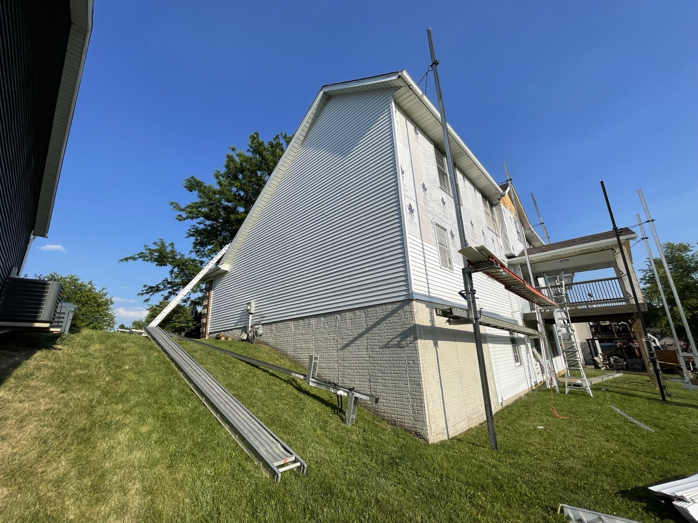

What a Roof Inspection Actually Covers
A residential roof inspection is a 30 to 60 minute on-site walk of the roof to assess condition, remaining life, and any damage or wear that needs attention. We check the shingles or panels for damage, granule loss, and lift. We check the flashing around chimneys, skylights, dormers, and roof-to-wall joints. We check the vent boots, pipe collars, and any roof penetration where water could get in. We check the gutters and any signs of ice dam damage from the previous winter. If you have attic access, we check for daylight, wet insulation, and framing issues that mean the roof has already started leaking. You get a verbal summary before we leave and photos plus a written report shortly after. Most inspections in Central Iowa are free with no obligation.
When You Actually Need a Roof Inspection
After a Storm
Hail, wind, or heavy debris. If a storm rolled through and you see anything in the yard, get an inspection while the damage is fresh and easy to document for insurance.
Before You Sell
An aging roof gets flagged in every home inspection. Knowing what condition your roof is in before you list gives you options. Fix it now, price it in, or negotiate later on your terms.
Before You Buy
A detailed roof inspection during due diligence tells you what you are really buying. Sometimes a seller-priced house needs a roof, and that changes the deal.
Before Ice Season
A late-fall inspection catches problems while there is still time to fix them before winter. Ice dam damage from a compromised roof is the most expensive winter damage most Iowa homeowners see.
Every 3 to 5 Years
Newer roofs under 15 years old should get a routine check every 3 to 5 years. Older roofs over 15 years old should be checked every 1 to 2 years to catch problems early.
If You See a Leak
Water stains on your ceilings, wet spots in the attic, or drips during rain mean there is already a hole in the system. Get it inspected before the water damage spreads.

What We Check on Every Roof
- Shingles or panels: Missing, curling, cracked, or bruised. Granule loss on asphalt. Fastener condition on metal.
- Flashing: Around chimneys, skylights, dormers, and any roof-to-wall joint. Common leak source on older Central Iowa homes.
- Vent boots and pipe collars: Rubber cracks after 10 to 15 years in Iowa sun. Cheap to replace, expensive to ignore.
- Ridge and hip caps: Sealed and secure, no lifting or missing pieces.
- Gutters and downspouts: Debris, granule buildup, sagging, or evidence of ice dam damage.
- Eaves, soffit, and fascia: Any rot, water staining, or paint failure indicating water getting behind the drip edge.
- Deck condition: Where visible, we look for sagging, soft spots, and staining that mean the wood is compromised.
- Attic (if accessible): Daylight through the deck, wet or matted insulation, staining on rafters and trusses.
The Report You Actually Get
Some roofers show up, glance at the roof, and tell you it needs a full replacement. That is not how we work.
- Verbal walkthrough before we leave. You know what we found while we are still standing in the driveway with you.
- Photos of every issue we flagged. Not stock photos. Your roof, your problem areas, so you see what we see.
- Written report shortly after. Summary of condition, remaining life estimate, and any specific issues that need attention.
- Honest recommendation. If the roof is fine, we tell you it is fine. If a small repair will handle it, we quote the repair. If a full replacement is the right call, we tell you why and what it costs.
- No obligation. You can take the report to another contractor, hold onto it for later, or hire us. Your call.

Roof Inspection FAQs
Yes. Storm damage inspections, pre-winter checks, and general roof assessments are free with no obligation. We come out, walk the roof, take photos, and give you an honest report. Real estate inspections that require a detailed written report on official letterhead for a buyer or seller carry a modest fee because of the paperwork involved.
Most residential roof inspections take 30 to 60 minutes on-site. Simple visual checks on a straightforward roof can be quicker. Complex rooflines, multiple stories, or roofs with obvious storm damage that need detailed documentation take longer.
Shingles or metal panels for damage and remaining life. Flashing around chimneys, skylights, dormers, and roof-to-wall joints. Vent boots, pipe collars, and roof penetrations. Gutter condition and any signs of ice dam damage. Ridge and hip caps. Deck condition where visible. If there is attic access, we check for daylight, wet insulation, and framing issues.
Every 3 to 5 years for a roof under 15 years old, and every 1 to 2 years for a roof over 15 years old. Also after any significant hail or wind event, before you list your home for sale, before you buy a home, and once in the fall before ice season if your roof is older.
No. If the roof is in good shape, we tell you. If it needs a small repair, we quote the repair. If it needs a full replacement, we tell you honestly and walk you through the numbers. The inspection is not a sales appointment in disguise.
Related Roofing Info
All Roofing Services
The full picture on our roofing work across Central Iowa.
Storm Damage
Hail, wind, and emergency repairs with full insurance claim help.
Full Replacement
Complete tear-off and reroof when repair no longer makes sense.